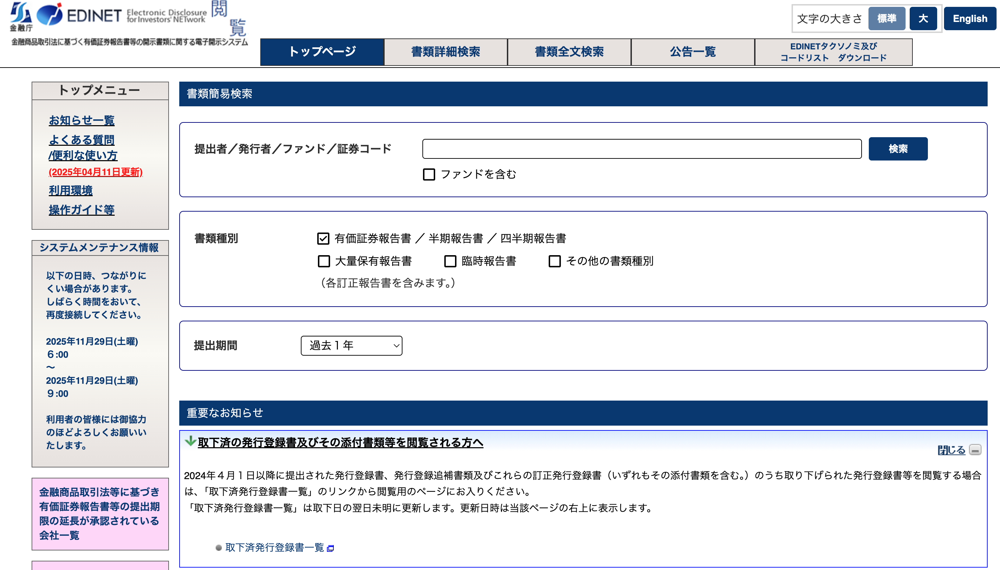
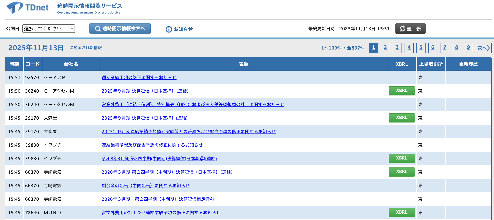
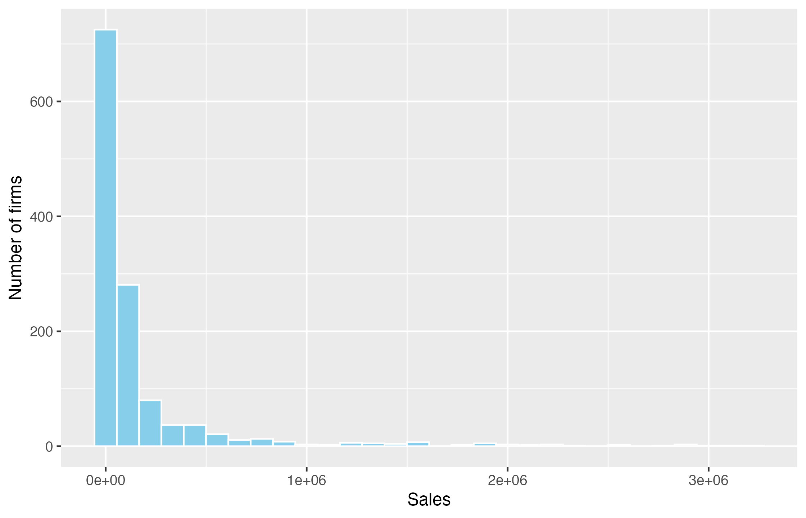
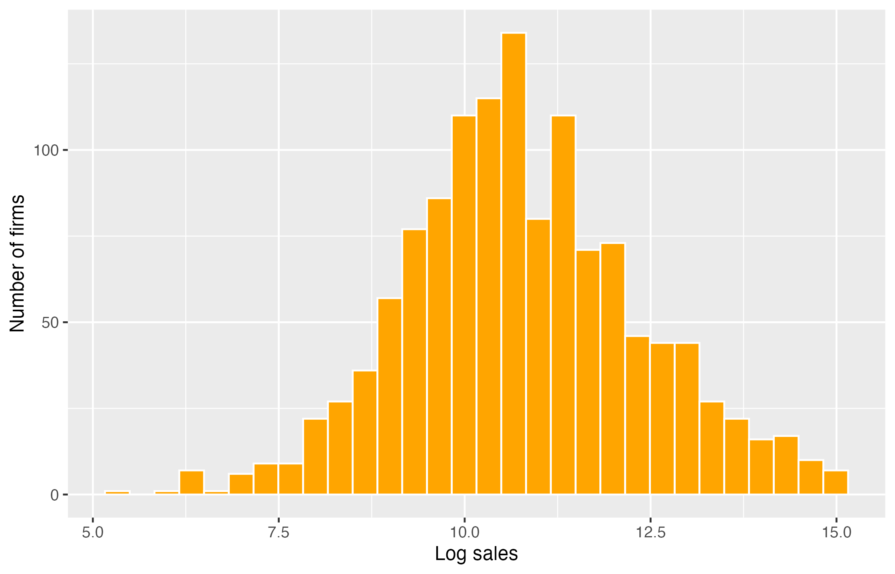

library(tidyverse)第7回：財務データ分析 I
到達目標
- 財務データの入手方法を学ぶ。
- 財務データの状態を把握し、分析に必要な整理と前処理を行える。
- 財務データに対する探索的データ分析の手法を理解できる。
作業の準備
empirical_finance.Rprojを開く。- File → New File → R ScriptからRスクリプトを新規作成し、
script/lesson07.Rとして保存する。すでに作成している場合は、そのファイルを開く。 - data_lesson07.csv をダウンロードをクリックし、Project内の
dataフォルダに保存する。同じファイルを保存済みの場合は、そのまま使用する。outputフォルダも確認し、なければ作成する。
以下のコードは、このRスクリプトに順に記述する。前回のオブジェクトが復元されても、使用するパッケージは読み込む。tidyverseは第6回で導入しているため、再インストールは不要である。
Chapter 1｜財務データの入手と読み方
1. 企業活動と財務諸表
第6回では、投資案ごとのキャッシュフローを整理し、NPVとIRRを比較した。ここからは企業の財務データを使い、売上高や利益の分布、企業間の違いを調べる。
企業の財務情報は、主に財務諸表にまとめられる。代表的な次の3つを財務三表と呼ぶ。
| 財務諸表 | 主な内容 | 時間の捉え方 | 読み取れること |
|---|---|---|---|
| 損益計算書（P/L） | 売上高、費用、利益 | 一定期間 | どれだけ売上を上げ、利益を得たか |
| 貸借対照表（B/S） | 資産、負債、純資産 | ある時点（期末など） | 何を保有し、その資金をどのように調達しているか |
| キャッシュ・フロー計算書（C/F） | 営業・投資・財務活動別の現金等の増減 | 一定期間 | 現金等が、どのような活動によって増減したか |
2. 有価証券報告書と決算短信
上場企業には不特定多数の投資家がいるため、投資家保護の一環として、財務データを含む重要な企業情報を公表する義務がある。その柱となるのが、金融商品取引法に基づく有価証券報告書（有報）と、証券取引所のルールに基づく決算短信である。
| 有価証券報告書 | 決算短信 | |
|---|---|---|
| 制度上の位置付け | 金融商品取引法に基づく法定開示 | 証券取引所のルールに基づく適時開示 |
| 主な内容 | 企業の概況、事業の状況、リスク、財務諸表と注記など | 売上高・利益などの決算概要や業績予想など |
| 開示時期 | 原則として決算期末から3か月以内に提出 | 決算内容が定まり次第、速やかに開示 |
| 分量のイメージ | 企業によっては200ページを超えることもある | 10ページ前後など、有報より簡潔な資料 |
| 監査との関係 | 収録される財務諸表は公認会計士・監査法人の監査を受ける | 決算短信自体は監査の対象外で、財務諸表の監査完了前に開示される場合もある |
| 重視する点 | 網羅性・信頼性：企業の経済活動を詳しく調べる | 速報性：決算の概要を早く把握する |
有価証券報告書は詳しい情報を得られる一方、決算期末から公表までに時間がかかる。その間の情報を補うのが決算短信である。例えば、東証の2025年3月期の集計では、期末から決算発表までの平均所要日数は40.7日だった。監査が終了する前の数値も含まれるため、後に有価証券報告書の財務諸表でも確認する。東証：決算短信の位置付け ／ 2025年3月期決算発表状況
公表された有価証券報告書と決算短信は、各企業の公式ウェブサイトの投資家向け情報（IR情報）で閲覧できる。例えば、任天堂の株主・投資家向け情報から探せる。
また、有価証券報告書は、金融庁が運営する電子開示システムEDINETで企業を横断して検索・閲覧できる。

決算短信は、東京証券取引所の適時開示情報伝達システムTDnetの閲覧サービスでも閲覧できる。

年間より短い期間の状況を調べる場合は、半期報告書や四半期決算短信も参照する。金融商品取引法上の四半期報告書制度は2024年4月に廃止されているため、現行制度ではこれらの資料を使う。金融庁：四半期報告書制度の廃止
ノートEDINET APIで財務データを取得する
API（Application Programming Interface）は、RなどのプログラムからWebサイトに「このデータがほしい」と依頼し、データを受け取るための窓口である。
例えば、EDINET APIを使うと、任天堂の有価証券報告書に含まれる財務データをRのコードでダウンロードできる。日付や書類IDを変えれば、他の年度や企業のデータにも同じ手順を使えるため、データ収集を繰り返す作業を自動化できる。
取得の大まかな流れは、次のとおりである。
- APIキーを取得する：EDINET APIの利用登録・キー取得画面でアカウントを作成し、利用者を識別するためのAPIキーを取得する。
- 書類IDを調べる：提出日を指定して書類一覧を取得し、対象企業の有価証券報告書のIDを確認する。
- データを取得する：書類IDとAPIキーを指定し、
type = 5でCSV入りZIPをダウンロードする。 - Rで読み込む：ZIPを展開し、CSVをタブ区切り・UTF-16LEとして読み込み、内容を確認する。
以下は任天堂の2025年3月期有価証券報告書の例である。まず、提出日の2025年6月26日の書類一覧から、企業名と書類の種類で対象を探す。結果のdocIDが書類ID（この例ではS100W73A）である。各自のキーは環境変数EDINET_API_KEYに設定する。詳しくは公式API仕様書を参照。
取得コード
library(httr2) # 初回のみ install.packages("httr2")
library(readr)
library(dplyr)
# 各自のAPIキーを環境変数から読み込む
key <- Sys.getenv("EDINET_API_KEY")
# 提出日ごとの書類一覧を取得する（dateは報告書の提出日）
docs <- request("https://api.edinet-fsa.go.jp/api/v2/documents.json") |> # 通信先を指定する
req_url_query(date = "2025-06-26", type = 2, `Subscription-Key` = key) |> # URLに検索条件とキーを追加
req_perform() |> # リクエストを送信し、応答を受け取る
resp_body_json(simplifyVector = TRUE) # JSONをRのリストや表に変換する
# 企業名と書類の種類で探す（120 = 有価証券報告書）
report <- docs$results |>
filter(filerName == "任天堂株式会社", docTypeCode == "120")
stopifnot(nrow(report) == 1) # 対象が1件でなければ処理を止める
print(report |> select(docID, filerName, docDescription))
doc_id <- report$docID[[1]] # この例では S100W73A
# 調べた書類IDを使い、CSV入りZIPを取得する
# paste0()でAPIのURLと書類IDをつなぐ
res <- request(paste0("https://api.edinet-fsa.go.jp/api/v2/documents/", doc_id)) |>
req_url_query(type = 5, `Subscription-Key` = key) |>
req_perform()
stopifnot(resp_content_type(res) == "application/octet-stream") # 応答がバイナリ形式か確認
# ZIPを保存し、展開する
dir.create("output", showWarnings = FALSE) # 保存先を作る（存在する場合の警告は非表示）
writeBin(resp_body_raw(res), "output/edinet.zip") # 応答の生データをバイナリで保存する
files <- unzip("output/edinet.zip", exdir = "output/edinet") # ZIPを展開し、ファイルのパスを得る
# jpcrpで始まる提出本文CSVを読む（タブ区切り・UTF-16LE）
edinet_raw <- read_tsv(
files[grepl("^jpcrp", basename(files))], # basename()でファイル名を得て、grepl()で先頭を照合する
locale = locale(encoding = "UTF-16LE"), # 読み込む文字コードを指定する
col_types = cols(.default = col_character()) # 元の表記を保つため全列を文字列として読む
)
# 先頭3行を、9列すべて表示する
print(head(edinet_raw, 3), width = Inf) # Infを指定して列の表示幅を制限しない取得結果は1,477行・9列である。先頭3行を示す。
# A tibble: 3 × 9
要素ID 項目名
<chr> <chr>
1 jpdei_cor:NumberOfSubmissionDEI 提出回数、DEI
2 jpcrp_cor:NetSalesSummaryOfBusinessResults 売上高、経営指標等
3 jpcrp_cor:NetSalesSummaryOfBusinessResults 売上高、経営指標等
コンテキストID 相対年度 `連結・個別` `期間・時点` ユニットID 単位
<chr> <chr> <chr> <chr> <chr> <chr>
1 FilingDateInstant 提出日時点 その他 時点 pure <NA>
2 Prior4YearDuration 四期前 その他 期間 JPY 円
3 Prior3YearDuration 三期前 その他 期間 JPY 円
値
<chr>
1 1
2 1758910000000
3 1695344000000
ノート本学で利用できる財務データベース
東京理科大学では、大学や学部・学科の契約により、次のデータベースを利用できる。
| データベース | 主に調べられる情報 |
|---|---|
| 日経NEEDS–FinancialQUEST（日経FQ） | 企業の財務、株式・債券、マクロ経済などの数値データ |
| 日経バリューサーチ | 国内外企業の財務情報、企業比較や企業価値評価に使う情報 |
| FactSet | 世界の企業・証券に関する情報 |
| eol（イーオーエル） | 有価証券報告書などの開示書類と、CSV形式の財務諸表データ |
アクセス先と利用方法は、LETUSの「経営学部 データソース」で確認する。学外からのVPN接続、利用登録、対象学科、同時アクセス数などの条件はデータベースごとに異なる。例えば、FactSetは経営学科・ビジネスエコノミクス学科を対象とし、アカウントの申請が必要である。
Chapter 2｜財務データの読み込みと整理
1. CSVの読み込み
財務データを分析するには、CSVをRの表として読み込み、列の内容やデータの型を確認する。
第6回と同じread_csv()を使い、読み込んだデータをfinancial_rawに保存する。
financial_raw <- read_csv(
"data/data_lesson07.csv",
na = c("", "NA"),
show_col_types = FALSE
)
head(financial_raw)# A tibble: 6 × 11
year firm_ID industry_ID sales OX NFE X OA FA OL FO
<dbl> <dbl> <dbl> <dbl> <dbl> <dbl> <dbl> <dbl> <dbl> <dbl> <dbl>
1 2015 1 1 5261. 437. NA 287. 13006. 3543. 4373. 2481.
2 2016 1 1 5949. 564. 50.7 513. 13866. 4642. 4534. 3960.
3 2017 1 1 6505. 691. 29.5 662. 13953. 7744. 5111. 6159.
4 2018 1 1 6846. 751. 86.5 665. 18818. 7285. 5137. 10124.
5 2019 1 1 7572. 959. 298. 660. 18190 9735. 5488. 11362.
6 2020 1 1 7538. 778. -65.5 844. 20463. 10274. 5371. 13772.data_lesson07.csvは、企業の財務情報を模したシミュレーション・データであり、実在企業の数値ではない。各列の内容は次のとおりである。損益計算書の項目（売上高sales、事業利益OX、純金融費用NFE、当期純利益X）は年度中の金額、貸借対照表の項目（事業資産OA、金融資産FA、事業負債OL、金融負債FO）は年度末の残高を表す。
| 列名 | 内容 |
|---|---|
year |
年度 |
firm_ID、industry_ID |
企業ID、産業ID |
sales |
売上高 |
OX、NFE、X |
事業利益、純金融費用、当期純利益 |
OA、FA |
事業資産、金融資産 |
OL、FO |
事業負債、金融負債 |
一行は「一つの企業の一つの年度」に対応する。同じ企業が複数年度に登場するため、行数と企業数は異なる。このように、複数の対象を複数時点にわたって観測したデータをパネルデータという。
続いて、大きさと列の型を調べる。glimpse()は、列名、型、値の一部を列ごとに表示する関数である。
dim(financial_raw)[1] 7920 11glimpse(financial_raw) # 各列の名前・型・値の一部をコンパクトに確認するRows: 7,920
Columns: 11
$ year <dbl> 2015, 2016, 2017, 2018, 2019, 2020, 2015, 2016, 2017, 2018…
$ firm_ID <dbl> 1, 1, 1, 1, 1, 1, 2, 2, 2, 2, 2, 2, 3, 3, 3, 3, 3, 3, 4, 4…
$ industry_ID <dbl> 1, 1, 1, 1, 1, 1, 1, 1, 1, 1, 1, 1, 1, 1, 1, 1, 1, 1, 1, 1…
$ sales <dbl> 5261.40, 5948.96, 6505.06, 6846.38, 7572.24, 7537.63, 3505…
$ OX <dbl> 437.49, 564.14, 691.18, 751.29, 958.53, 778.37, 45.82, 51.…
$ NFE <dbl> NA, 50.667498, 29.543157, 86.486500, 298.049774, -65.45877…
$ X <dbl> 286.64, 513.48, 661.64, 664.80, 660.48, 843.83, 40.07, 49.…
$ OA <dbl> 13005.55, 13865.58, 13952.58, 18818.48, 18190.00, 20462.86…
$ FA <dbl> 3543.43, 4642.16, 7743.99, 7284.72, 9735.13, 10274.25, 225…
$ OL <dbl> 4372.96, 4534.22, 5111.22, 5137.28, 5487.96, 5371.38, 1840…
$ FO <dbl> 2480.72, 3959.70, 6159.02, 10123.91, 11362.22, 13772.15, 2…データは7,920行・11列である。firm_IDとindustry_IDは数値として読み込まれるが、大小や平均に意味のある量ではなく、企業と産業を区別するための番号である。
2. IDのカテゴリ変数への変換
ここでは、企業ID（firm_ID）と産業ID（industry_ID）を、企業や産業の区分を表すカテゴリ変数に変換する。これにより、RでIDを数量ではなくグループの区分として扱えるようにする。
factor型（因子型）は、所属や種類などのカテゴリを表す型である。as.factor()で二つのIDを変換し、整理後の表をfinancial_dataとして保存する。元の表はfinancial_rawに残る。
financial_data <- financial_raw |>
mutate(
firm_ID = as.factor(firm_ID), # 数値のIDをカテゴリを表すfactor型に変換する
industry_ID = as.factor(industry_ID)
)
financial_data |>
select(year, firm_ID, industry_ID, sales) |>
glimpse()Rows: 7,920
Columns: 4
$ year <dbl> 2015, 2016, 2017, 2018, 2019, 2020, 2015, 2016, 2017, 2018…
$ firm_ID <fct> 1, 1, 1, 1, 1, 1, 2, 2, 2, 2, 2, 2, 3, 3, 3, 3, 3, 3, 4, 4…
$ industry_ID <fct> 1, 1, 1, 1, 1, 1, 1, 1, 1, 1, 1, 1, 1, 1, 1, 1, 1, 1, 1, 1…
$ sales <dbl> 5261.40, 5948.96, 6505.06, 6846.38, 7572.24, 7537.63, 3505…IDは文字列でも管理できるが、ここではカテゴリであることを明示するためfactor型を使う。一方、yearは年度順の並べ替えや差の計算に使うため、数値のままにする。
Chapter 3｜探索的データ分析
1. データセットの概要確認
探索的データ分析（exploratory data analysis、EDA）とは、要約統計量や図を用いて、データの構造、分布、欠損などの特徴を把握する作業である。個別の指標を計算する前に、どのような企業・年度が含まれ、各変数がどの範囲の値を取るのかを確認する。
要約統計量
summary()を表全体に適用すると、列ごとに概要を表示できる。
summary(financial_data) # 数値列の要約統計量やfactor列のカテゴリ別件数を表示する year firm_ID industry_ID sales
Min. :2015 1 : 6 3 :1760 Min. : 205
1st Qu.:2016 2 : 6 10 :1702 1st Qu.: 16103
Median :2018 3 : 6 7 :1334 Median : 40431
Mean :2018 4 : 6 1 :1143 Mean : 166007
3rd Qu.:2019 5 : 6 9 : 667 3rd Qu.: 118314
Max. :2020 7 : 6 8 : 429 Max. :3496433
(Other):7884 (Other): 885
OX NFE X OA
Min. :-353606.7 Min. :-285383.9 Min. :-357624.8 Min. : 217
1st Qu.: 399.3 1st Qu.: -66.4 1st Qu.: 383.3 1st Qu.: 12560
Median : 1602.9 Median : -1.2 Median : 1586.1 Median : 30799
Mean : 7968.9 Mean : 64.0 Mean : 7904.9 Mean : 152273
3rd Qu.: 5260.5 3rd Qu.: 41.4 3rd Qu.: 5204.6 3rd Qu.: 93469
Max. : 398034.5 Max. : 331035.3 Max. : 572588.7 Max. :7987936
NA's :1
FA OL FO
Min. : 288 Min. : 35 Min. : 44
1st Qu.: 6835 1st Qu.: 3965 1st Qu.: 3757
Median : 19095 Median : 10868 Median : 11125
Mean : 80185 Mean : 50261 Mean : 70681
3rd Qu.: 52118 3rd Qu.: 33111 3rd Qu.: 35446
Max. :29250611 Max. :2817975 Max. :7026924
数値の列では、最小値、第1四分位数、中央値、平均値、第3四分位数、最大値が表示される。第1四分位数と第3四分位数は、小さい順に並べた値のそれぞれ25%、75%の位置に対応する。欠損がある場合は、その件数も表示される。一方、factor型に変換したIDでは、カテゴリごとの行数が表示される。
まず売上高salesの平均値と中央値、最小値と最大値を比較し、企業間で値の大きさがどの程度異なるかを読む。また、NFEには欠損が1件含まれていることも分かる。
対象年度・企業数・産業数
unique()は、ベクトルから重複を除いた値を取り出す関数である。年度の列に適用すると、データに含まれる年度を列挙できる。
unique(financial_data$year) # 重複を除き、収録されている年度を列挙する[1] 2015 2016 2017 2018 2019 2020企業数と産業数は、dplyrのn_distinct()で重複を除いた値の個数を数える。unique()が具体的な値を返すのに対し、n_distinct()はその種類数を返す。
# n_distinct()は具体的な値ではなく、重複を除いた種類数を返す
n_distinct(financial_data$firm_ID)[1] 1515n_distinct(financial_data$industry_ID)[1] 102015～2020年の6年度、1,515社、10産業が含まれる。行数は7,920行であり、同じ企業の複数年度の観測を含んでいる。すべての企業が6年度分そろっているわけではない。
2. 欠損データの処理
データに欠損があるときは、まず場所と件数を調べ、欠損の理由を考えてから処理方法を選ぶ。ここでは、欠損の確認方法と主な対処法を学び、欠損を含む行を除く操作を試す。
欠損を含む行と列の確認
第4回で使ったcolSums(is.na())で、列ごとの欠損数を調べる。欠損のある行はfilter()で取り出せる。
colSums(is.na(financial_data)) year firm_ID industry_ID sales OX NFE
0 0 0 0 0 1
X OA FA OL FO
0 0 0 0 0 financial_data |>
filter(is.na(NFE)) |>
select(year, firm_ID, sales, NFE, X)# A tibble: 1 × 5
year firm_ID sales NFE X
<dbl> <fct> <dbl> <dbl> <dbl>
1 2015 1 5261. NA 287.企業ID 1の2015年について、純金融費用NFEが1件欠損している。他の列には欠損がない。
欠損の発生理由と分析への影響
欠損値を見つけたら、処理方法を選ぶ前に、なぜ値が記録されていないのかを考える。未開示、データの取得漏れ、企業の倒産など、理由によって分析への影響は異なる。欠損が特定の企業や状況に偏っている場合、値がそろった観測だけを使うと、結論にも偏りが生じる可能性がある。
例えば、企業の数年後の業績を調べるとき、途中で倒産した企業については、その後の業績を観測できない。このような企業を除き、存続した企業だけで分析すると、企業全体の業績を実態より良く評価するおそれがある。こうした偏りを生存者バイアス（survivorship bias）という。欠損行を削除しても、この問題が解消されるわけではない。
欠損値の主な処理方法
まず元の資料や取得条件を確認し、取得漏れや入力ミスを修正できる場合は修正する。それでも値を得られない場合には、次のような方法がある。
| 方法 | 内容 | 注意点 |
|---|---|---|
| 欠損を含む行の削除 | 分析に必要な値がそろった行だけを使う | 観測数が減り、残る企業や年度が偏ることがある |
| 平均値・中央値による補完 | 観測された値の平均や中央値で埋める | 分布のばらつきや変数間の関係を変えてしまう |
| 前後の時点からの補間 | 同じ企業の前後の値から欠けた値を推定する | 時間的な変化を仮定するため、急変や倒産後の値には安易に使えない |
| モデルによる補完 | 他の変数との関係を使って値を推定する | モデルの仮定に依存し、推定した値には不確実性がある |
欠損を含む行の削除
今回はシミュレーション・データであり、欠損を含む行も1行だけなので、最も簡単な方法として、その行を削除する。
tidyrのdrop_na()は、欠損を含む行を除く関数である。列を指定しない場合はすべての列が対象となり、どこか一つでも欠損がある行を除く。tidyr：drop_na()
financial_clean <- financial_data |>
drop_na() # 列を指定しない場合は、どの列にも欠損がない行だけを残す
nrow(financial_data)[1] 7920nrow(financial_clean)[1] 7919colSums(is.na(financial_clean)) year firm_ID industry_ID sales OX NFE
0 0 0 0 0 0
X OA FA OL FO
0 0 0 0 0 行数は7,920行から7,919行となり、各列の欠損数はすべて0になる。削除されるのは企業ID 1の2015年の行だけであり、同じ企業の他年度の行は残る。削除前の表はfinancial_data、元のCSVを読み込んだ表はfinancial_rawに残しているため、処理前後を比較できる。元のCSVファイル自体は変更されない。
対象列を限定する場合は、drop_na(NFE)のように指定する。今回のデータでは同じ1行が除かれるが、他の列にも欠損がある場合は結果が異なる。売上高だけを分析するなら、NFEの欠損を理由に行を除く必要はない。実際には、分析に使う変数に応じて削除対象を決める。
Chapter 4｜データの抽出とヒストグラムによる可視化
欠損値の有無を確認できたので、今度は特定のデータの分布をヒストグラムで視覚化する方法を学習する。ここでは、全データのうち初年度のデータのみを抽出し、売上の分布を図示めすることを目標としよう。
1. 条件に合うデータの抽出
分析したい年度や産業に合わせて行を絞り、必要な列を選ぶことで、比較の対象をそろえられる。ここでは、これまで学んだ抽出と並べ替えを組み合わせる。
欠損行を削除したfinancial_cleanから、まず2015年のデータを取り出す。さらに産業2に絞り、必要な列を残して売上高の大きい順に並べる。
financial_2015 <- financial_clean |>
filter(year == 2015)
industry_2_2015 <- financial_2015 |>
filter(industry_ID == "2") |>
select(firm_ID, sales, OX, X) |>
arrange(desc(sales))
head(industry_2_2015)# A tibble: 6 × 4
firm_ID sales OX X
<fct> <dbl> <dbl> <dbl>
1 264 2985178. 83608. 83884.
2 246 2893663. 109059. 107838.
3 252 2383142. 88528. 87630.
4 258 1546048. -68785. -60945.
5 256 1482852. 27985. 26419.
6 263 964245. 29477. 31412.filter()、select()、arrange()の役割は第6回と同じである。産業IDはカテゴリの値として"2"と指定する。
練習1： 2020年の産業7について、企業ID、売上高、当期純利益を取り出し、売上高の大きい順に表示しなさい。抽出元には、全年度を含むfinancial_cleanを使う。
解答例
financial_clean |>
filter(year == 2020, industry_ID == "7") |>
select(firm_ID, sales, X) |>
arrange(desc(sales))filter()で年度と産業を絞り、select()で必要な3列を取り出す。arrange(desc(sales))で売上高の大きい順に並べる。
2. ヒストグラムによる可視化
ヒストグラムは、数値を区間に分け、各区間に含まれる観測数を棒の高さで表した図である。第6回のgeom_col()は計算済みの値を描いたが、geom_histogram()は元の観測から区間ごとの度数を数える。
# ggplot()のdataとmappingの引数名を省略し、横軸に売上高を指定する
sales_plot <- ggplot(financial_2015, aes(x = sales)) +
# geom_col()と異なり、yを指定せず、区間ごとの観測数を自動で数える
geom_histogram(
bins = 30, # 売上高を分ける区間数
fill = "skyblue", # 棒の内側の色
colour = "white" # 棒の枠線の色
) +
labs(x = "Sales", y = "Number of firms")
print(sales_plot)
bins = 30は区間数の指定である。この表は2015年に絞っており、一行が一社に対応するため、縦軸は企業数となる。売上高の小さい側に多くの企業が集中し、右側には少数の大きな値がある。
3. 対数変換と分布の可視化
値の幅が大きい正の変数は、自然対数に変換する(対数変換)と分布を捉えやすくなることがある。log()は自然対数を求める関数であり、例えばlog(100)は約4.61、log(10000)は約9.21となる。元の値の100倍という差が、対数では約4.61の差になる。
売上高がすべて正であることを確かめ、新しい列log_salesを作る。
sum(financial_2015$sales <= 0) # 対数を取れない0以下の売上高がないか確認する[1] 0financial_2015 <- financial_2015 |>
mutate(log_sales = log(sales)) # 売上高の自然対数を新しい列に保存するlog_sales_plot <- ggplot(financial_2015, aes(x = log_sales)) +
geom_histogram(bins = 30, fill = "orange", colour = "white") +
labs(x = "Log sales", y = "Number of firms")
print(log_sales_plot)
図を見ると、自然対数を取った売上高は、元の売上高に比べて左右の偏りが小さくなり、正規分布に近い釣鐘型の形状を示している。元の図では左端に集中していた観測が広がり、分布の中心や全体的な傾向を捉えやすくなっている。ただし、対数を取れば必ず正規分布になるわけではない。
対数変換は観測を削除する操作ではなく、値の尺度を変える操作である。元の売上高もsales列に残している。横軸が金額ではなく対数になった点に注意して読む。0や負の値には同じ方法をそのまま適用できないため、赤字を含む利益のデータでは別の扱いが必要となる。
今回の売上高のように分布が極端に歪んでいる場合、元の金額だけで分析を進めると、平均値などがごく少数の大規模企業の影響を強く受け、典型的な企業の姿を捉えにくくなることがある。
こうした財務データの分析では、対数変換に加え、売上高や利益を総資産などの企業規模を表す変数で割って基準化する方法や、複数の財務項目を組み合わせた財務比率を用いる方法も広く使われる。金額の大小だけでなく、企業規模に対する相対的な水準を比較するためである。ただし、比率にすれば極端な値の影響が必ずなくなるわけではなく、分母の大きさや意味にも注意が必要となる。
4. 図の保存
分布を示す図を保存しておくと、レポートに使ったり、別の年度の図と見比べたりできる。ここでは第6回と同じggsave()を使い、2015年の対数売上高の図を保存する。
ggsave(
"output/log-sales-2015.png",
plot = log_sales_plot,
width = 7,
height = 4.5
)同名のファイルは上書きされる。Filesペインで保存した画像を開き、script/lesson07.Rも保存する。